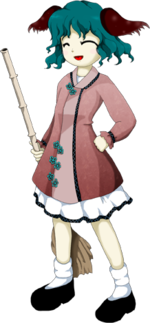

- Welcome to Touhou Wiki!
- Please register to edit. For assistance, check in with our Discord server or IRC channel.
Kyouko Kasodani
Kyouko Kasodani kasodanʲi kʲoːko (♫) | |
|---|---|
|
 Kyouko Kasodani in Ten Desires Sutra Chanting YamabikoMore Character Titles | |
| Species | |
| Abilities |
Reflection of sound |
| Occupation |
Reciting Buddhist sutras from mountains |
| Location | |
Music Themes | |
| |
Appearances | |
| Official Games | |
| |
| Print Works | |
| |
Kyouko Kasodani (幽谷 響子 Kasodani Kyouko) is yamabiko youkai that embodies mountain echoes and is able to reflect sound waves. She is a recent arrival to Myouren Temple; with mountain echoes no longer seen as a strange, inexplicable phenomenon, she decided to enter the Buddhist discipline. She now serves the Temple as a priest in-training, and is also responsible for cleaning duties and confronting trespassers.
General Information[edit]
Kyouko first appeared as the second stage midboss and boss in Ten Desires.
Personality[edit]
Kyouko is a cheerful, dutiful, and energetic girl who reminds the heroines of the rules before attacking them. Her ability to scream out her remarks cheerfully is perceived as either unnerving or unsurprising in Gensokyo. However, she is somewhat timid, and when she runs into a mountain climber she'll flee before shouting anything out. Sometimes she can be spotted mumbling sutras to herself, so despite her well-behaved appearance, she may be under some stress.
Ability[edit]
- Reflection of sound
This ability comes from her species as a Yamabiko and is very compatible with reciting Buddhist sutras, but it can also be used offensively: by reflecting sound several times, Kyouko can completely save it up and is able to create danmaku made of compressed air, which are then loudly scattered around with seemingly enough force to be lethal.[2] In-game, this ability is represented by visible barriers that reflect and then release Kyouko's danmaku. The barriers themselves are harmless, but she can trap her bullets inside the field and increase the density of the danmaku, where unfortunately for her some bullets are directed away from the player. The reflection itself alters the trajectory of bullets so that they lead to sudden and unexpected attacks. In her sprite's motion when she attacks, she places one hand close to her mouth as if she was about to shout.
Occupation[edit]
Kyouko is currently a Buddhist priest-in-training at the Myouren Temple. Her current training is apparently to sweep the main gate every morning. She also recites sutras as the other priests do, but because she's inexperienced, it is loud and difficult to listen to. It may also be because she doesn't actually know what they mean – she's only repeating what she hears other priests say.
Her daily activities at the Myouren Temple, however, leave her quite bored, and as a result of her dissatisfaction with her training, she has formed a punk rock band with Mystia Lorelei called Choujuu Gigaku. Byakuren Hijiri is not pleased with this development, and in Symposium of Post-mysticism promises to punish Mystia for being a bad influence.
Character Design[edit]
Name[edit]
She is known as Kyouko Kasodani (幽谷 響子). The characters for Kasodani (幽谷) literally mean "Ghost Valley", and Kyouko (響子) means "resonance/echo child". Her name would appear to be a reference to her abilities as a yamabiko, since all of her attacks are based on reflective boundaries. The two kanji characters for her surname are separated from the two characters for her name, but if you put them all together minus the last kanji, you will get an alternative wording for "yamabiko" (幽谷響) - the name of her species, which is also written as やまびこ or 山彦.[3] [4]
Her surname was incorrectly written as "Kasoya" (another possible reading of 幽谷) in both the demo and the first release of Ten Desires, but this was later fixed in version 1.00b.
Design[edit]
In Ten Desires' official art, Kyouko has teal colored hair and eyes along with yamabiko ears. She wears a long pale pink shirt with teal flower-shaped buttons and a white dress below it with black trim. It is stated in Symposium of Post-mysticism that she has a short tail. She also carries a bamboo broom.
Story[edit]
Games[edit]
- Ten Desires
During the events of Ten Desires, Kyouko welcomes every heroine that comes to the Myouren Temple with Danmaku in attempt to drive off the intruders. However, she is unsuccessful and allows them to investigate the graveyard behind the temple.
Spin-offs[edit]
- Hopeless Masquerade
Kyouko made a background cameo appearance in Hopeless Masquerade on the Myouren Temple stage. She is seen sweeping on the stairs.
- Impossible Spell Card
Presumably from hearing or seeing a wanted sign about the mischief-making amanojaku Seija Kijin, Kyouko appears to be one of the many youkai that tries to capture her on day 2. She uses spell cards that are considered impossible to dodge.
Literature[edit]
- Wild and Horned Hermit, Chapter 9
Kyouko was depicted as one of the youkai at the Myouren Temple that was attacked by a strange "black mist", later revealed to be Suika Ibuki.
Relationships[edit]
Among the others at the Myouren Temple, she is fond of Mamizou Futatsuiwa, whom she says will listen to any of her concerns. Other information is quite sparse, but it is assumed that she knows the others living at the temple.
- Mystia Lorelei
Together with Mystia they have a band called "Choujuu Gigaku".
Gallery[edit]
Kyouko, as she appears in Wild and Horned Hermit chapter 9
Kyouko with Mystia performing as the band "Choujuu Gigaku"
Spell Cards[edit]
| Name | Translated | Comments | Games | Stage | ||
|---|---|---|---|---|---|---|
| Total: 11 | ||||||
| 響符「マウンテンエコー」 | Echo Sign "Mountain Echo" | TD | St. 2: E/N | |||
| 響符「マウンテンエコースクランブル」 | Echo Sign "Mountain Echo Scramble" | TD | St. 2: H/L | |||
| 響符「パワーレゾナンス」 | Echo Sign "Power Resonance" | TD | St. 2: E/N/H/L | |||
| 山彦「ロングレンジエコー」 | Mountain Echo "Long-Range Echo" | TD | St. 2: E/N | |||
| 山彦「アンプリファイエコー」 | Mountain Echo "Amplify Echo" | TD | St. 2: H/L | |||
| 大声「チャージドクライ」 | Great Voice "Charged Cry" | TD | St. 2: E/N | |||
| 大声「チャージドヤッホー」 | Great Voice "Charged Yahoo!" | TD | St. 2: H/L | |||
| 山彦「ヤマビコの本領発揮エコー」 | Mountain Echo "Yamabiko's Specialty Echo Demonstration" | TD | Ov | |||
| 叫喚「プライマルスクリーム」 | Scream "Primal Scream" | ISC | St. 2 | |||
| 劈音「ピアッシングサークル」」 | Piercing Sound "Piercing Circle" | ISC | St. 2 | |||
| 御経「無限念仏」 | Sutra "Infinite Nianfo" | ISC | St. 2 | |||
Additional Information[edit]
- When Kyouko is ready to launch her next wave of attacks, her sprite is animated to make a shouting motion. Her ears vibrate extremely fast, almost like a blur.
- Kyouko was featured on the official demo CD of Ten Desires.
- Both of the sayings on her sprites, "gya-te-gya-te-" and "ze-mu-to-do-shu-" are from the latter part of the Japanese version of the Heart Sutra, a very common sutra in Mahāyāna Buddhism.
Fandom[edit]
Official Profiles[edit]
Official Sources[edit]
- 2011/08/13 Ten Desires - Stage 2 dialogue; キャラ設定とエキストラストーリー.txt (official profile)
- 2011/11/25 Ten Desires special and two-part interview with ZUN
- 2011/11/25 Wild and Horned Hermit - Chapter 9
- 2012/04/27 Symposium of Post-mysticism - Kyouko Kasodani
References[edit]
- ↑ 1.0 1.1 Symposium of Post-mysticism: Kyouko
- ↑ Strange Creators of Outer World. 2018 Autumn! - New Touhou Project Danmaku Book Preview
- ↑ wikipedia:Gazu Hyakki Yakō#First Volume - 陰
- ↑ Japanese Wikipedia on 山彦
| This page is part of Project Characters, a Touhou Wiki project that aims to write proper descriptions for all official characters of Touhou Project. Please keep the character page guidelines in mind when contributing. |